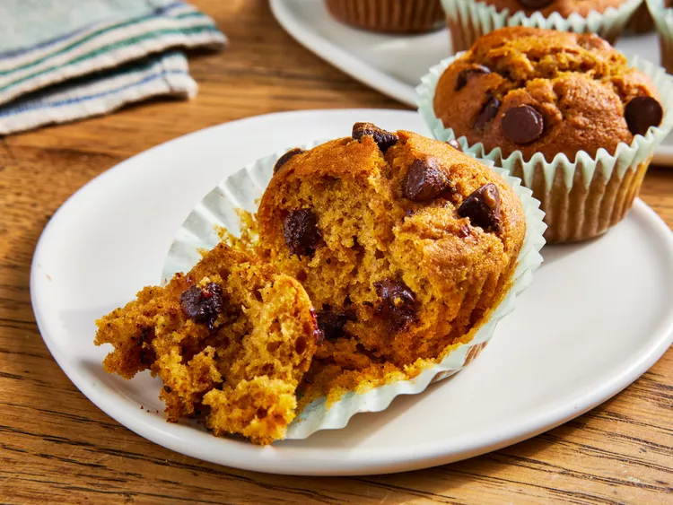

Pumpkin Chocolate Chip Muffins

These pumpkin chocolate chip muffins are moist and delicious and super easy to make with canned pumpkin.
Ingredients
- This sweet recipe starts with ¾ cup white sugar.
- Oil: Vegetable oil is essential for these moist muffins.
- Eggs: Two eggs lend moisture and help bind the batter together.
- Pumpkin: Used canned pumpkin or homemade pumpkin puree.
- Water: You'll need ¼ cup water for the muffin batter.
- Flour: All-purpose flour gives the muffin batter structure.
- Leaveners: Baking soda and baking powder act as leaveners, which means they help the muffins rise.
- Spices: Flavor the muffins with ground cinnamon, ground nutmeg, ground cloves, and a pinch of salt.
- Chocolate chips: Of course, you'll need chocolate chips!
Steps
- Whisk the wet ingredients in one bowl and the dry ingredients in another.
- Combine the mixtures, then fold in the chocolate chips.
- Fill the cups of a prepared muffin tin.
- Bake until a toothpick comes out clean.
Back to Index